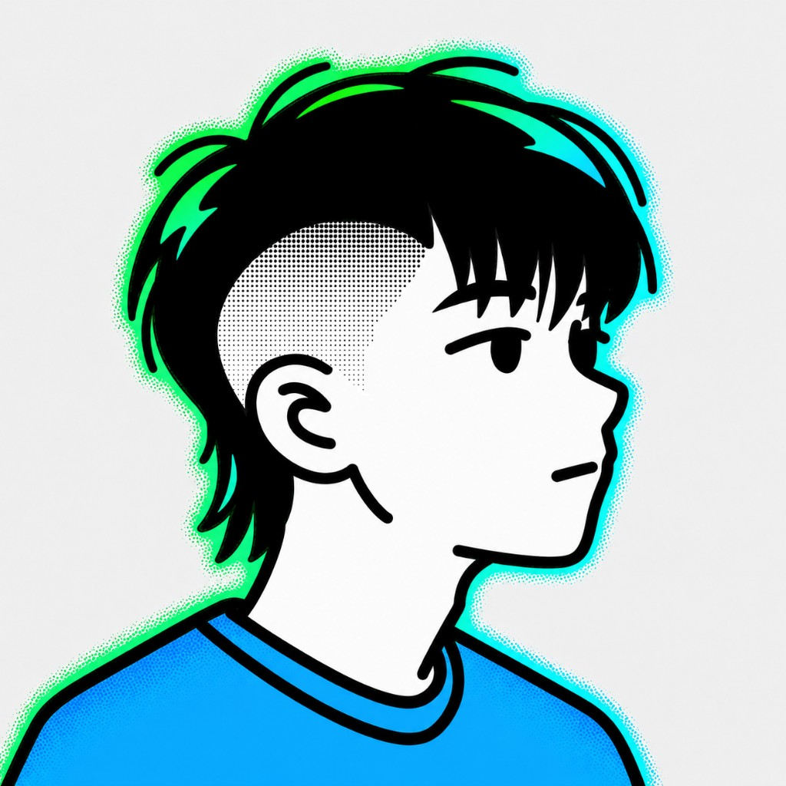

平面设计师，在杭州
包装
杭州2025
一家只做白茶的小铺。米白纸，竖排四个字，右上角一个朱红小印。不放英文。
书籍
诗集2024
六十四页，锁线胶装。封面是黑卡，只有书名和一条压凹的细线。
远看是四个字，近看才是活动信息。红只用了一条线。
两个展厅，一条走廊。需要人不会走错。
1989 年生于湖州，2012 年到杭州。在出版社做了四年书籍设计，2016 年离开，开始一个人工作。一年大约十个项目。再多，稿子就会变粗。
我在意三件事：一本书被拿在手里的重量，一张海报在三米外还剩下什么，一个名字被说出来的时候听不听得见。